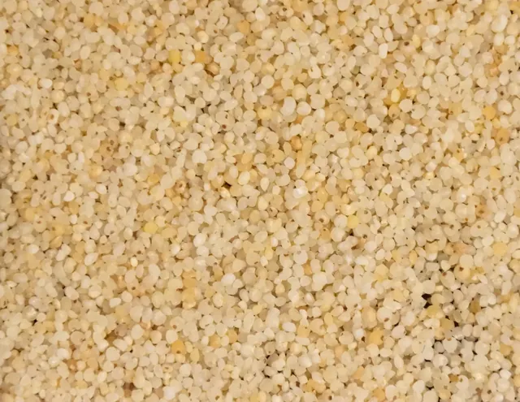
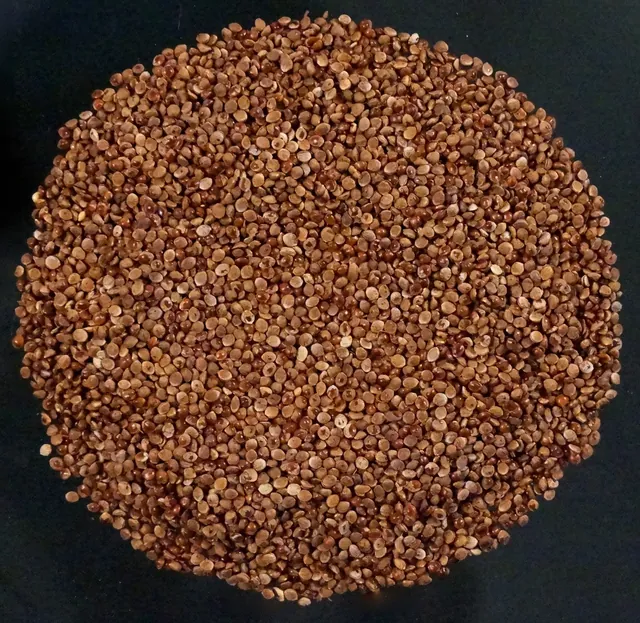
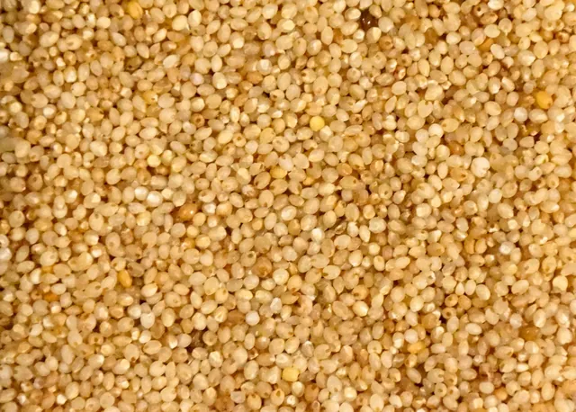
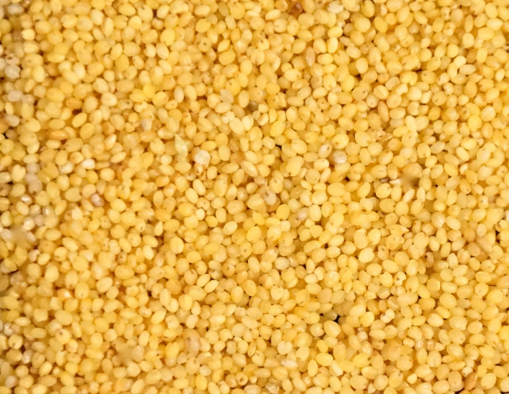
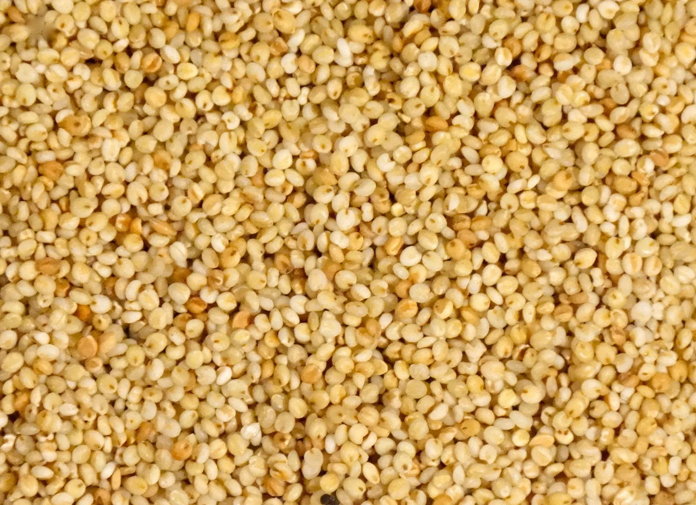
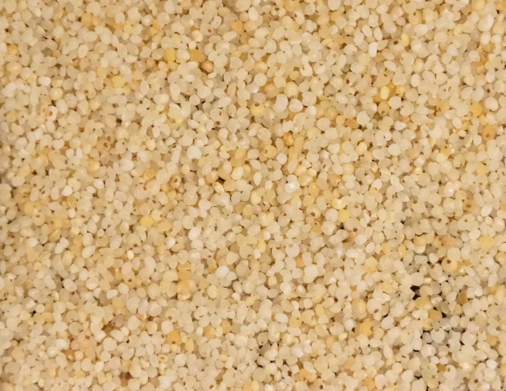

The Siridhanya collection
Meet the millets.
Five Siridhanya grains, with their local names and a closer look at each. Start with Foxtail, Browntop, Barnyard, Kodo, or Little millet.
01 / SIRIDHANYA
Foxtail
Korralu · Kangni
Meet the grain
02 / SIRIDHANYA
Browntop
Andu Korralu
Meet the grain

03 / SIRIDHANYA
Barnyard
Oodhalu · Jhangora
Meet the grain

04 / SIRIDHANYA
Kodo
Arikalu · Kodra
Meet the grain

05 / SIRIDHANYA
Little
Samelu · Kutki
Meet the grain

One of the five Siridhanya
Foxtail millet
Korralu · Kangni
| Carbohydrates | 60.6 g | Niacin | 0.7 mg |
|---|---|---|---|
| Protein | 12.3 g | Riboflavin | 0.11 mg |
| Fibre | 8.0 g | Thiamine | 0.59 mg |

One of the five Siridhanya
Browntop millet
Andu Korralu
| Carbohydrates | 69.7 g | Niacin | 18.5 mg |
|---|---|---|---|
| Protein | 11.5 g | Riboflavin | 0.027 mg |
| Fibre | 12.5 g | Thiamine | 3.2 mg |

One of the five Siridhanya
Barnyard millet
Oodhalu · Jhangora
| Carbohydrates | 65.5 g | Niacin | 1.5 mg |
|---|---|---|---|
| Protein | 6.2 g | Riboflavin | 0.08 mg |
| Fibre | 9.8 g | Thiamine | 0.31 mg |

One of the five Siridhanya
Kodo millet
Arikalu · Kodra
| Carbohydrates | 65.6 g | Niacin | 2.0 mg |
|---|---|---|---|
| Protein | 6.2 g | Riboflavin | 0.09 mg |
| Fibre | 9.0 g | Thiamine | 0.33 mg |
One of the five Siridhanya
Little millet
Samelu · Kutki
| Carbohydrates | 65.5 g | Niacin | 1.5 mg |
|---|---|---|---|
| Protein | 7.7 g | Riboflavin | 0.07 mg |
| Fibre | 9.8 g | Thiamine | 0.30 mg |
Also in the source guide
Proso millet
The original guide also lists Proso millet as Warigalu or Barri, while explaining its focus on the five Siridhanya grains.